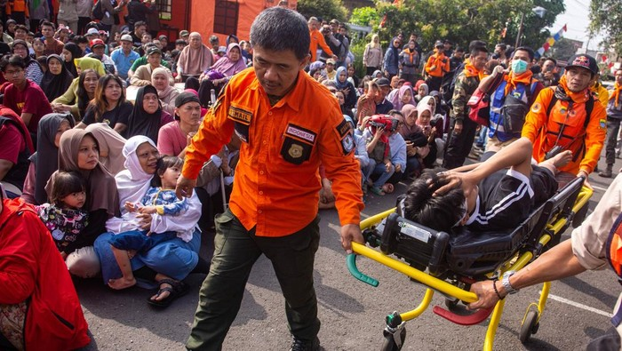
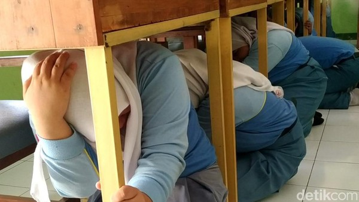
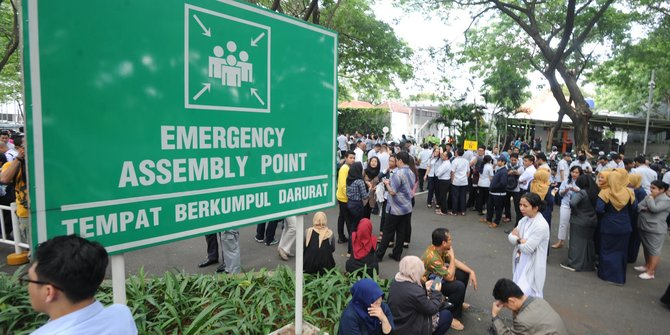

Drop, Cover, Hold On
Saat terjadi guncangan gempa, lakukan berlutut, berlindung, dan bertahan.
Hindari mitos "triangle of life". BNPB tidak menganjurkan teknik tersebut. Gunakan Drop, Cover, Hold On.

Sebelum gempa
Pastikan bangunan rumah dan lingkungan sekitar tahan gempa.
Amankan benda yang mudah jatuh dan bisa melukai.
Lakukan pelatihan dan simulasi perlindungan diri serta evakuasi gempa bumi di lingkungan tempat tinggal.
Perhatikan letak pintu, tangga darurat, dan tempat aman.
Sumber: BNPB, Siaga Bencana: Gempa, Mencegah Dampak; Poster edukasi PREDIKT! (Preparedness for disaster toolkit).
Saat gempa
Saat terjadi guncangan gempa, lakukan berlutut, berlindung, dan bertahan.
Hindari mitos "triangle of life". BNPB tidak menganjurkan teknik tersebut. Gunakan Drop, Cover, Hold On.

Saat gempa
Bila ada meja atau kursi yang kuat, berlindung di bawah meja.
Jika di dalam lift, jangan panik dan tekan tombol darurat.
Jauhi kaca, bangunan bertingkat, pohon tinggi, papan reklame, dan tiang listrik.
Bagi pengguna kursi roda, kunci kursi roda dan lindungi kepala.
Hindari jembatan dan terowongan.
Bila sedang berkendara, pinggirkan mobil ke tempat aman dan tetap berada di dalam mobil.
Sumber: BNPB, Siaga Bencana: Gempa, Saat Terjadi; Poster edukasi PREDIKT! (Preparedness for disaster toolkit). Catatan "triangle of life": Bisnis.com, mengutip pejabat BNPB.

Sesudah gempa
Setelah gempa usai, segera ke tempat terbuka yang aman (titik kumpul).
Tetap lindungi kepala saat evakuasi.
Waspada kebakaran pasca gempa.
Jika terperangkap, gunakan peluit atau ketuk pipa.
Tetap siaga dan hati-hati saat kembali memasuki rumah atau gedung.
Jangan gunakan lift; gunakan tangga darurat bila sedang di gedung bertingkat.
Perbaiki segera kerusakan listrik, gas, atau bangunan.
Sumber: BNPB, Siaga Bencana: Gempa, Setelah Terjadi; Poster edukasi PREDIKT! (Preparedness for disaster toolkit).
Informasi resmi
Andalkan sumber resmi, bukan kabar berantai.
Tersedia di Play Store dan App Store. Pasang sebelum gempa terjadi, lalu aktifkan notifikasinya.
Sistem peringatan dini tsunami Indonesia yang dapat diakses melalui situs resminya.
Kontak darurat
Simpan nomor darurat di ponsel dan tuliskan di tempat yang mudah terlihat di rumah.
112
Layanan panggilan darurat nasional.
115
Badan SAR Nasional untuk pencarian dan pertolongan.
117
Badan Nasional Penanggulangan Bencana.
Sumber: BMKG, Edukasi Gempa Bumi dan Tsunami; Kompas TV Info Publik; Bisnis.com.